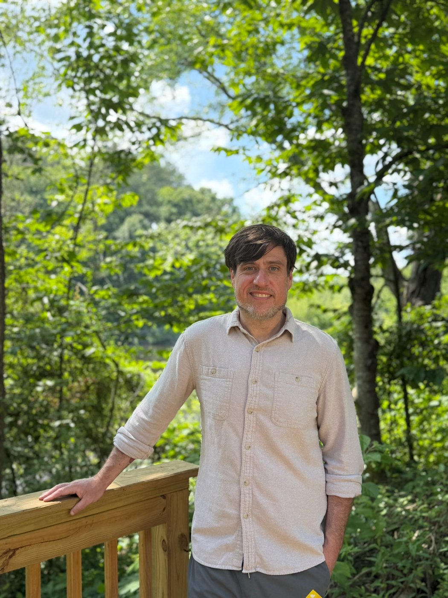
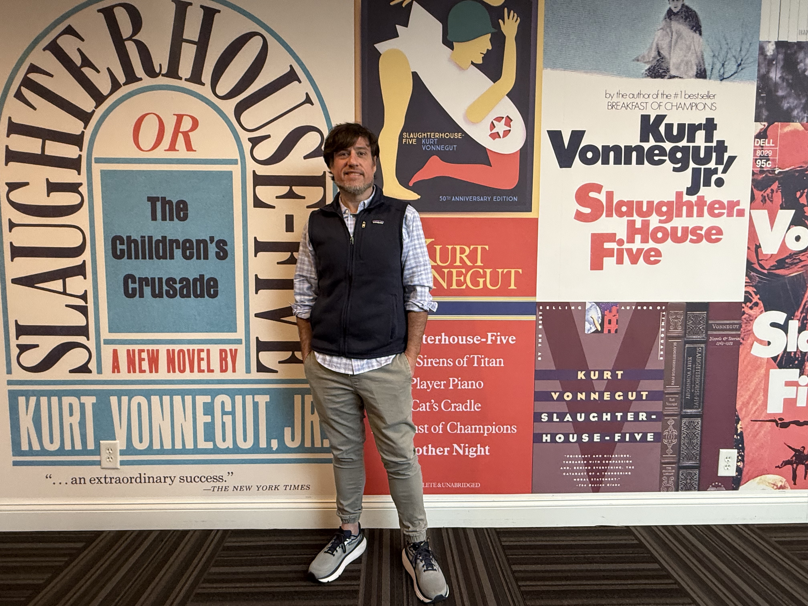

Brian Harris, LPC
I was born and raised in Rome, Georgia and I’m grateful to serve individuals throughout Northwest Georgia through both in-person and telehealth counseling. Before becoming a counselor, I spent much of my twenties working in Atlanta’s restaurant industry. Those years taught me a great deal about people. I worked alongside individuals from different backgrounds, cultures, beliefs, and life circumstances, yet I was often struck by how similar many of our hopes, fears, struggles, and questions seemed to be.
In my thirties, I returned to school and studied Humanistic Psychology at the University of West Georgia, earning both bachelor’s and master’s degrees. Around the same time, I found meaningful work at a homeless shelter in Rome, where I continued learning, growing, and integrating what I encountered in the classroom with the lives of the people I worked alongside.

Those experiences reinforced lessons I had already begun learning in restaurants: people rarely fit neatly into the categories assigned to them, and just as often, we struggle to remain in the categories we choose for ourselves. We are dynamic, changing, often full of contradictions, and always more complex than any diagnosis, label, or first impression can capture.
That perspective continues to shape the way I practice therapy. I’m interested in the patterns, relationships, experiences, values, and questions that shape us into who we are. Simultaneously, my work has convinced me that no answer we find is fixed and no shape we take is permanent.
Over the years, I’ve worked with people diagnosed with bipolar disorder, major depressive disorder, anxiety disorders, trauma-related conditions, and other mental health concerns. I’ve also worked with people navigating life’s turning points—starting college, changing careers, ending relationships, grieving losses, questioning long-held beliefs, and moving through quarter-life, midlife, and later-life transitions. Whatever brings someone to therapy, my goal remains the same: to understand the person within the context of their life rather than reducing them to a diagnosis or a problem to be solved.
Many therapists build their practices around particular problems. My interest has always been in people. Anxiety, depression, trauma, addiction, grief, relationship difficulties, and major life transitions all matter, but they matter because they are part of someone’s life, not because they define it. At its best, therapy provides an opportunity to understand yourself more clearly, develop greater trust in your own judgment, and build a life that feels more consistent with who you are and what matters most to you.